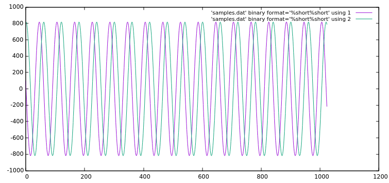

Libiio command line utility
Libiio provides five main userspace help/utilities to ease development of software interfacing Linux Industrial I/O (IIO) devices:
iio_attr : read and write IIO attributes.
iio_info : dump the IIO attributes.
iio_readdev : read an IIO buffer device.
iio_writedev : write an IIO buffer device.
iio_reg : read or write SPI or I2C registers in an IIO device (useful to debug drivers).
iio_reg
iio_reg is part of the Libiio package and allows to
read or write SPI or I2C registers in an IIO device (useful to debug drivers):
~$
iio_reg -h
Usage:
iio_reg <device> <register> [<value>]
Running Remote
The iio_reg application can also connect to a libiio remote device via IP.
Prior in running iio_reg set the IIOD_REMOTE environmental variable.
~$
export IIOD_REMOTE=IP address of the remote platform
Finding
An IIO context can have multiple logical devices, and sometimes not all devices
will have a specific register interface. To find out which IIO device support
register access, try (remember that iio_attr supports a -D option to
look for debug attributes).
~$
iio_attr -u ip:192.168.2.1 -D
IIO context has 4 devices:
iio:device0, ad9361-phy: found 179 debug attributes
iio:device1, xadc: found 0 debug attributes
iio:device2, cf-ad9361-dds-core-lpc: found 1 debug attributes
iio:device3, cf-ad9361-lpc: found 2 debug attributes
~$
iio_attr -u ip:192.168.2.1 -D . direct_reg_access
dev 'ad9361-phy', debug attr 'direct_reg_access', value :'0x0'
dev 'cf-ad9361-dds-core-lpc', debug attr 'direct_reg_access', value :'0x90162'
dev 'cf-ad9361-lpc', debug attr 'direct_reg_access', value :'0x0'
From here you can see the three different devices that support the iio_reg
tool.
Example
~$
iio_reg ad9361-phy 0x3
0x5c
iio_attr
iio_attr is part of the Libiio package, and allows to
read and write IIO attributes:
~$
iio_attr -h
Usage:
iio_attr [OPTION]... -d [device] [attr] [value]
-c [device] [channel] [attr] [value]
-B [device] [attr] [value]
-D [device] [attr] [value]
-C [attr]
Options:
-h, --help : Show this help and quit.
-I, --ignore-case : Ignore case distinctions.
-q, --quiet : Return result only.
-a, --auto : Use the first context found.
Optional qualifiers:
-u, --uri : Use the context at the provided URI.
-i, --input-channel : Filter Input Channels only.
-o, --output-channel : Filter Output Channels only.
Attribute types:
-s, --scan-channel : Filter Scan Channels only.
-d, --device-attr : Read/Write device attributes
-c, --channel-attr : Read/Write channel attributes.
-C, --context-attr : Read IIO context attributes.
-B, --buffer-attr : Read/Write buffer attributes.
-D, --debug-attr : Read/Write debug attributes.
Examples
Look at Context Attributes
~$
iio_attr -a -C
Using auto-detected IIO context at URI "usb:3.8.5"
IIO context with 14 attributes:
hw_model: Analog Devices PlutoSDR Rev.B (Z7010-AD9364)
hw_model_variant: 0
hw_serial: 104473222a87000618000600473ed57ae0
fw_version: v0.31
ad9361-phy,xo_correction: 40000000
ad9361-phy,model: ad9364
local,kernel: 4.14.0-42540-g387d584
usb,idVendor: 0456
usb,idProduct: b673
usb,release: 2.0
usb,vendor: Analog Devices Inc.
usb,product: PlutoSDR (ADALM-PLUTO)
usb,serial: 104473222a87000618000600473ed57ae0
usb,libusb: 1.0.22.11312
List Devices in a Context
~$
iio_attr -u usb:3.8.5 -d
IIO context has 5 devices:
iio:device0: adm1177, found 0 device attributes
iio:device1: ad9361-phy, found 18 device attributes
iio:device2: xadc, found 1 device attributes
iio:device3: cf-ad9361-dds-core-lpc, found 0 device attributes
iio:device4: cf-ad9361-lpc, found 0 device attributes
~$
iio_attr -u usb:3.8.5 -c
IIO context has 5 devices:
iio:device0: adm1177, found 2 channels
iio:device1: ad9361-phy, found 9 channels
iio:device2: xadc, found 10 channels
iio:device3: cf-ad9361-dds-core-lpc, found 6 channels
iio:device4: cf-ad9361-lpc, found 2 channels
List Channel attributes
The . can be used as a wildcard if you don’t know the name.
~$
iio_attr -u ip:192.168.2.1 -c adm1177 .
dev 'adm1177', channel 'voltage0' (input), attr 'raw', value '771'
dev 'adm1177', channel 'voltage0' (input), attr 'scale', value '6.433105468'
dev 'adm1177', channel 'current0' (input), attr 'raw', value '776'
dev 'adm1177', channel 'current0' (input), attr 'scale', value '0.516601562'
Read a channel attributes
~$
iio_attr -u ip:192.168.2.1 -c ad9361-phy RX_LO
dev 'ad9361-phy', channel 'altvoltage0' (output), id 'RX_LO', attr 'external', value '0'
dev 'ad9361-phy', channel 'altvoltage0' (output), id 'RX_LO', attr 'fastlock_load', value '0'
dev 'ad9361-phy', channel 'altvoltage0' (output), id 'RX_LO', attr 'fastlock_recall', ERROR: Invalid argument (-22)
dev 'ad9361-phy', channel 'altvoltage0' (output), id 'RX_LO', attr 'fastlock_save', value '0 242,198,163,125,228,163,171,195,167,187,179,163,241,167,187,167'
dev 'ad9361-phy', channel 'altvoltage0' (output), id 'RX_LO', attr 'fastlock_store', value '0'
dev 'ad9361-phy', channel 'altvoltage0' (output), id 'RX_LO', attr 'frequency', value '2400000000'
dev 'ad9361-phy', channel 'altvoltage0' (output), id 'RX_LO', attr 'frequency_available', value '[70000000 1 6000000000]'
dev 'ad9361-phy', channel 'altvoltage0' (output), id 'RX_LO', attr 'powerdown', value '0'
~$
iio_attr -u ip:192.168.2.1 -c ad9361-phy RX_LO frequency
dev 'ad9361-phy', channel 'altvoltage0' (output), id 'RX_LO', attr 'frequency', value '2400000000'
Write to a channel attribute
~$
iio_attr -u ip:192.168.2.1 -c ad9361-phy RX_LO frequency 2400000100
dev 'ad9361-phy', channel 'altvoltage0' (output), id 'RX_LO', attr 'frequency', value '2400000000'
wrote 11 bytes to frequency
dev 'ad9361-phy', channel 'altvoltage0' (output), id 'RX_LO', attr 'frequency', value '2400000100'
iio_info
iio_info is part of the Libiio package and allows to
dump the IIO attributes:
~$
iio_info -h
Usage:
iio_info [-x <xml_file>]
iio_info [-n <hostname>]
iio_info [-u <uri>]
Options:
-h, --help
Show this help and quit.
-x, --xml
Use the XML backend with the provided XML file.
-n, --network
Use the network backend with the provided hostname.
-u, --uri
Use the context at the provided URI.
-s, --scan
Scan for available backends.
-a, --auto
Scan for available contexts and if only one is available use it.
Example
~$
iio_info
Library version: 0.15 (git tag: v0.15)
Compiled with backends: local xml ip usb serial
IIO context created with local backend.
Backend version: 0.15 (git tag: v0.15)
Backend description string: Linux pluto 4.9.0-10475-g2398d50 #263 SMP PREEMPT Mon Aug 20 15:30:08 CEST 2018 armv7l
IIO context has 7 attributes:
hw_model: Analog Devices PlutoSDR Rev.B (Z7010-AD9363)
hw_model_variant: 1
hw_serial: 104400b83991001807001100968f65adac
fw_version: v0.29
ad9361-phy,xo_correction: 39999853
ad9361-phy,model: ad9364
local,kernel: 4.9.0-10475-g2398d50
IIO context has 5 devices:
iio:device3: cf-ad9361-dds-core-lpc (buffer capable)
6 channels found:
voltage0: (output, index: 0, format: le:S16/16>>0)
4 channel-specific attributes found:
attr 0: calibscale value: 1.000000
attr 1: calibphase value: 0.000000
attr 2: sampling_frequency_available value: 30720000 3840000
attr 3: sampling_frequency value: 30720000
voltage1: (output, index: 1, format: le:S16/16>>0)
4 channel-specific attributes found:
attr 0: calibphase value: 0.000000
attr 1: calibscale value: 1.000000
attr 2: sampling_frequency_available value: 30720000 3840000
attr 3: sampling_frequency value: 30720000
altvoltage3: TX1_Q_F2 (output)
5 channel-specific attributes found:
attr 0: raw value: 1
attr 1: phase value: 0
attr 2: frequency value: 9279985
attr 3: scale value: 0.000000
attr 4: sampling_frequency value: 30720000
altvoltage1: TX1_I_F2 (output)
5 channel-specific attributes found:
attr 0: phase value: 90000
attr 1: scale value: 0.000000
attr 2: raw value: 1
attr 3: frequency value: 9279985
attr 4: sampling_frequency value: 30720000
altvoltage0: TX1_I_F1 (output)
5 channel-specific attributes found:
attr 0: phase value: 90000
attr 1: scale value: 0.000000
attr 2: frequency value: 9279985
attr 3: raw value: 1
attr 4: sampling_frequency value: 30720000
altvoltage2: TX1_Q_F1 (output)
5 channel-specific attributes found:
attr 0: raw value: 1
attr 1: phase value: 0
attr 2: frequency value: 9279985
attr 3: scale value: 0.000000
attr 4: sampling_frequency value: 30720000
2 buffer-specific attributes found:
attr 0: watermark value: 2048
attr 1: data_available value: 0
1 debug attributes found:
debug attr 0: direct_reg_access value: 0x90062
iio:device1: ad9361-phy
9 channels found:
altvoltage1: TX_LO (output)
8 channel-specific attributes found:
attr 0: external value: 0
attr 1: frequency value: 2450000000
attr 2: fastlock_store value: 0
attr 3: fastlock_recall ERROR: Invalid argument (-22)
attr 4: powerdown value: 0
attr 5: fastlock_save value: 0 218,218,218,218,218,218,218,218,218,218,218,218,218,218,218,218
attr 6: frequency_available value: [46875001 1 6000000000]
attr 7: fastlock_load value: 0
voltage0: (input)
15 channel-specific attributes found:
attr 0: hardwaregain_available value: [-3 1 71]
attr 1: hardwaregain value: 71.000000 dB
attr 2: rssi value: 115.50 dB
attr 3: rf_port_select value: A_BALANCED
attr 4: gain_control_mode value: slow_attack
attr 5: rf_port_select_available value: A_BALANCED B_BALANCED C_BALANCED A_N A_P B_N B_P C_N C_P TX_MONITOR1 TX_MONITOR2 TX_MONITOR1_2
attr 6: rf_bandwidth value: 18000000
attr 7: rf_dc_offset_tracking_en value: 1
attr 8: sampling_frequency_available value: [2083333 1 61440000]
attr 9: quadrature_tracking_en value: 1
attr 10: sampling_frequency value: 30720000
attr 11: gain_control_mode_available value: manual fast_attack slow_attack hybrid
attr 12: filter_fir_en value: 0
attr 13: rf_bandwidth_available value: [200000 1 56000000]
attr 14: bb_dc_offset_tracking_en value: 1
voltage3: (output)
8 channel-specific attributes found:
attr 0: scale value: 1.000000
attr 1: raw value: 306
attr 2: sampling_frequency_available value: [2083333 1 61440000]
attr 3: rf_port_select_available value: A B
attr 4: filter_fir_en value: 0
attr 5: sampling_frequency value: 30720000
attr 6: rf_bandwidth_available value: [200000 1 40000000]
attr 7: rf_bandwidth value: 18000000
altvoltage0: RX_LO (output)
8 channel-specific attributes found:
attr 0: frequency_available value: [70000000 1 6000000000]
attr 1: fastlock_save value: 0 220,220,220,220,220,220,220,220,220,220,220,220,220,220,220,220
attr 2: powerdown value: 0
attr 3: fastlock_load value: 0
attr 4: fastlock_store value: 0
attr 5: frequency value: 2399999998
attr 6: external value: 0
attr 7: fastlock_recall ERROR: Invalid argument (-22)
voltage2: (output)
8 channel-specific attributes found:
attr 0: raw value: 306
attr 1: scale value: 1.000000
attr 2: sampling_frequency_available value: [2083333 1 61440000]
attr 3: rf_port_select_available value: A B
attr 4: filter_fir_en value: 0
attr 5: sampling_frequency value: 30720000
attr 6: rf_bandwidth_available value: [200000 1 40000000]
attr 7: rf_bandwidth value: 18000000
temp0: (input)
1 channel-specific attributes found:
attr 0: input value: 33333
voltage0: (output)
10 channel-specific attributes found:
attr 0: rf_port_select value: A
attr 1: hardwaregain value: -10.000000 dB
attr 2: rssi value: 0.00 dB
attr 3: hardwaregain_available value: [0 250 89750]
attr 4: sampling_frequency_available value: [2083333 1 61440000]
attr 5: rf_port_select_available value: A B
attr 6: filter_fir_en value: 0
attr 7: sampling_frequency value: 30720000
attr 8: rf_bandwidth_available value: [200000 1 40000000]
attr 9: rf_bandwidth value: 18000000
voltage2: (input)
13 channel-specific attributes found:
attr 0: offset value: 57
attr 1: scale value: 0.305250
attr 2: raw value: 1049
attr 3: rf_port_select_available value: A_BALANCED B_BALANCED C_BALANCED A_N A_P B_N B_P C_N C_P TX_MONITOR1 TX_MONITOR2 TX_MONITOR1_2
attr 4: rf_bandwidth value: 18000000
attr 5: rf_dc_offset_tracking_en value: 1
attr 6: sampling_frequency_available value: [2083333 1 61440000]
attr 7: quadrature_tracking_en value: 1
attr 8: sampling_frequency value: 30720000
attr 9: gain_control_mode_available value: manual fast_attack slow_attack hybrid
attr 10: filter_fir_en value: 0
attr 11: rf_bandwidth_available value: [200000 1 56000000]
attr 12: bb_dc_offset_tracking_en value: 1
out: (input)
1 channel-specific attributes found:
attr 0: voltage_filter_fir_en value: 0
18 device-specific attributes found:
attr 0: dcxo_tune_coarse ERROR: No such device (-19)
attr 1: rx_path_rates value: BBPLL:983040007 ADC:245760001 R2:122880000 R1:61440000 RF:30720000 RXSAMP:30720000
attr 2: trx_rate_governor value: nominal
attr 3: calib_mode_available value: auto manual manual_tx_quad tx_quad rf_dc_offs rssi_gain_step
attr 4: xo_correction_available value: [39991854 1 40007852]
attr 5: gain_table_config value: <gaintable AD9361 type=FULL dest=3 start=1300000000 end=4000000000>
attr 6: dcxo_tune_fine ERROR: No such device (-19)
attr 7: dcxo_tune_fine_available value: [0 0 0]
attr 8: ensm_mode_available value: sleep wait alert fdd pinctrl pinctrl_fdd_indep
attr 9: multichip_sync ERROR: Permission denied (-13)
attr 10: rssi_gain_step_error value: lna_error: 0 0 0 0 mixer_error: 0 0 0 0 0 0 0 0 0 0 0 0 0 0 0 gain_step_calib_reg_val: 0 0 0 0 0
attr 11: dcxo_tune_coarse_available value: [0 0 0]
attr 12: tx_path_rates value: BBPLL:983040007 DAC:122880000 T2:122880000 T1:61440000 TF:30720000 TXSAMP:30720000
attr 13: trx_rate_governor_available value: nominal highest_osr
attr 14: xo_correction value: 39999853
attr 15: ensm_mode value: fdd
attr 16: filter_fir_config value: FIR Rx: 0,0 Tx: 0,0
attr 17: calib_mode value: auto
178 debug attributes found:
debug attr 0: digital_tune value: 0
debug attr 1: calibration_switch_control value: 0
debug attr 2: multichip_sync value: 0
debug attr 3: gaininfo_rx2 ERROR: Resource temporarily unavailable (-11)
debug attr 4: gaininfo_rx1 value: 71 76 0 0 0 0 0 0
debug attr 5: bist_timing_analysis value: 0
debug attr 6: bist_tone value: 0
debug attr 7: bist_prbs value: 0
debug attr 8: loopback value: 0
debug attr 9: initialize value: 0
debug attr 10: adi,txmon-2-lo-cm value: 48
debug attr 11: adi,txmon-1-lo-cm value: 48
debug attr 12: adi,txmon-2-front-end-gain value: 2
debug attr 13: adi,txmon-1-front-end-gain value: 2
debug attr 14: adi,txmon-duration value: 8192
debug attr 15: adi,txmon-delay value: 511
debug attr 16: adi,txmon-one-shot-mode-enable value: 0
debug attr 17: adi,txmon-dc-tracking-enable value: 0
debug attr 18: adi,txmon-high-gain value: 24
debug attr 19: adi,txmon-low-gain value: 0
debug attr 20: adi,txmon-low-high-thresh value: 37000
debug attr 21: adi,gpo3-tx-delay-us value: 0
debug attr 22: adi,gpo3-rx-delay-us value: 0
debug attr 23: adi,gpo2-tx-delay-us value: 0
debug attr 24: adi,gpo2-rx-delay-us value: 0
debug attr 25: adi,gpo1-tx-delay-us value: 0
debug attr 26: adi,gpo1-rx-delay-us value: 0
debug attr 27: adi,gpo0-tx-delay-us value: 0
debug attr 28: adi,gpo0-rx-delay-us value: 0
debug attr 29: adi,gpo3-slave-tx-enable value: 0
debug attr 30: adi,gpo3-slave-rx-enable value: 0
debug attr 31: adi,gpo2-slave-tx-enable value: 0
debug attr 32: adi,gpo2-slave-rx-enable value: 0
debug attr 33: adi,gpo1-slave-tx-enable value: 0
debug attr 34: adi,gpo1-slave-rx-enable value: 0
debug attr 35: adi,gpo0-slave-tx-enable value: 0
debug attr 36: adi,gpo0-slave-rx-enable value: 0
debug attr 37: adi,gpo3-inactive-state-high-enable value: 0
debug attr 38: adi,gpo2-inactive-state-high-enable value: 0
debug attr 39: adi,gpo1-inactive-state-high-enable value: 0
debug attr 40: adi,gpo0-inactive-state-high-enable value: 0
debug attr 41: adi,gpo-manual-mode-enable-mask value: 0
debug attr 42: adi,gpo-manual-mode-enable value: 0
debug attr 43: adi,aux-dac2-tx-delay-us value: 0
debug attr 44: adi,aux-dac2-rx-delay-us value: 0
debug attr 45: adi,aux-dac2-active-in-alert-enable value: 0
debug attr 46: adi,aux-dac2-active-in-tx-enable value: 0
debug attr 47: adi,aux-dac2-active-in-rx-enable value: 0
debug attr 48: adi,aux-dac2-default-value-mV value: 0
debug attr 49: adi,aux-dac1-tx-delay-us value: 0
debug attr 50: adi,aux-dac1-rx-delay-us value: 0
debug attr 51: adi,aux-dac1-active-in-alert-enable value: 0
debug attr 52: adi,aux-dac1-active-in-tx-enable value: 0
debug attr 53: adi,aux-dac1-active-in-rx-enable value: 0
debug attr 54: adi,aux-dac1-default-value-mV value: 0
debug attr 55: adi,aux-dac-manual-mode-enable value: 1
debug attr 56: adi,aux-adc-decimation value: 256
debug attr 57: adi,aux-adc-rate value: 40000000
debug attr 58: adi,temp-sense-decimation value: 256
debug attr 59: adi,temp-sense-periodic-measurement-enable value: 1
debug attr 60: adi,temp-sense-offset-signed value: 206
debug attr 61: adi,temp-sense-measurement-interval-ms value: 1000
debug attr 62: adi,elna-gaintable-all-index-enable value: 0
debug attr 63: adi,elna-rx2-gpo1-control-enable value: 0
debug attr 64: adi,elna-rx1-gpo0-control-enable value: 0
debug attr 65: adi,elna-bypass-loss-mdB value: 0
debug attr 66: adi,elna-gain-mdB value: 0
debug attr 67: adi,elna-settling-delay-ns value: 0
debug attr 68: adi,ctrl-outs-enable-mask value: 255
debug attr 69: adi,ctrl-outs-index value: 0
debug attr 70: adi,rssi-duration value: 1000
debug attr 71: adi,rssi-wait value: 1
debug attr 72: adi,rssi-delay value: 1
debug attr 73: adi,rssi-unit-is-rx-samples-enable value: 0
debug attr 74: adi,rssi-restart-mode value: 3
debug attr 75: adi,fagc-adc-large-overload-inc-steps value: 2
debug attr 76: adi,fagc-power-measurement-duration-in-state5 value: 64
debug attr 77: adi,fagc-rst-gla-if-en-agc-pulled-high-mode value: 0
debug attr 78: adi,fagc-rst-gla-en-agc-pulled-high-enable value: 0
debug attr 79: adi,fagc-rst-gla-large-lmt-overload-enable value: 1
debug attr 80: adi,fagc-rst-gla-large-adc-overload-enable value: 1
debug attr 81: adi,fagc-energy-lost-stronger-sig-gain-lock-exit-cnt value: 8
debug attr 82: adi,fagc-rst-gla-engergy-lost-sig-thresh-below-ll value: 10
debug attr 83: adi,fagc-rst-gla-engergy-lost-goto-optim-gain-enable value: 1
debug attr 84: adi,fagc-rst-gla-engergy-lost-sig-thresh-exceeded-enable value: 1
debug attr 85: adi,fagc-rst-gla-stronger-sig-thresh-above-ll value: 10
debug attr 86: adi,fagc-optimized-gain-offset value: 5
debug attr 87: adi,fagc-rst-gla-stronger-sig-thresh-exceeded-enable value: 1
debug attr 88: adi,fagc-use-last-lock-level-for-set-gain-enable value: 1
debug attr 89: adi,fagc-gain-index-type-after-exit-rx-mode value: 0
debug attr 90: adi,fagc-gain-increase-after-gain-lock-enable value: 0
debug attr 91: adi,fagc-final-overrange-count value: 3
debug attr 92: adi,fagc-lmt-final-settling-steps value: 1
debug attr 93: adi,fagc-lpf-final-settling-steps value: 1
debug attr 94: adi,fagc-lock-level-gain-increase-upper-limit value: 5
debug attr 95: adi,fagc-lock-level-lmt-gain-increase-enable value: 1
debug attr 96: adi,fagc-lp-thresh-increment-steps value: 1
debug attr 97: adi,fagc-lp-thresh-increment-time value: 5
debug attr 98: adi,fagc-allow-agc-gain-increase-enable value: 0
debug attr 99: adi,fagc-state-wait-time-ns value: 260
debug attr 100: adi,fagc-dec-pow-measurement-duration value: 64
debug attr 101: adi,agc-immed-gain-change-if-large-lmt-overload-enable value: 0
debug attr 102: adi,agc-immed-gain-change-if-large-adc-overload-enable value: 0
debug attr 103: adi,agc-gain-update-interval-us value: 1000
debug attr 104: adi,agc-sync-for-gain-counter-enable value: 0
debug attr 105: adi,agc-dig-gain-step-size value: 4
debug attr 106: adi,agc-dig-saturation-exceed-counter value: 3
debug attr 107: adi,agc-lmt-overload-large-inc-steps value: 2
debug attr 108: adi,agc-lmt-overload-small-exceed-counter value: 10
debug attr 109: adi,agc-lmt-overload-large-exceed-counter value: 10
debug attr 110: adi,agc-adc-lmt-small-overload-prevent-gain-inc-enable value: 0
debug attr 111: adi,agc-adc-large-overload-inc-steps value: 2
debug attr 112: adi,agc-adc-large-overload-exceed-counter value: 10
debug attr 113: adi,agc-adc-small-overload-exceed-counter value: 10
debug attr 114: adi,agc-outer-thresh-low-inc-steps value: 2
debug attr 115: adi,agc-outer-thresh-low value: 18
debug attr 116: adi,agc-inner-thresh-low-inc-steps value: 1
debug attr 117: adi,agc-inner-thresh-low value: 12
debug attr 118: adi,agc-inner-thresh-high-dec-steps value: 1
debug attr 119: adi,agc-inner-thresh-high value: 10
debug attr 120: adi,agc-outer-thresh-high-dec-steps value: 2
debug attr 121: adi,agc-outer-thresh-high value: 5
debug attr 122: adi,agc-attack-delay-extra-margin-us value: 1
debug attr 123: adi,mgc-split-table-ctrl-inp-gain-mode value: 0
debug attr 124: adi,mgc-dec-gain-step value: 2
debug attr 125: adi,mgc-inc-gain-step value: 2
debug attr 126: adi,mgc-rx2-ctrl-inp-enable value: 0
debug attr 127: adi,mgc-rx1-ctrl-inp-enable value: 0
debug attr 128: adi,gc-use-rx-fir-out-for-dec-pwr-meas-enable value: 0
debug attr 129: adi,gc-max-dig-gain value: 15
debug attr 130: adi,gc-dig-gain-enable value: 0
debug attr 131: adi,gc-low-power-thresh value: 24
debug attr 132: adi,gc-dec-pow-measurement-duration value: 8192
debug attr 133: adi,gc-lmt-overload-low-thresh value: 704
debug attr 134: adi,gc-lmt-overload-high-thresh value: 800
debug attr 135: adi,gc-adc-large-overload-thresh value: 58
debug attr 136: adi,gc-adc-small-overload-thresh value: 47
debug attr 137: adi,gc-adc-ovr-sample-size value: 4
debug attr 138: adi,gc-rx2-mode value: 2
debug attr 139: adi,gc-rx1-mode value: 2
debug attr 140: adi,update-tx-gain-in-alert-enable value: 0
debug attr 141: adi,tx-attenuation-mdB value: 10000
debug attr 142: adi,rf-tx-bandwidth-hz value: 18000000
debug attr 143: adi,rf-rx-bandwidth-hz value: 18000000
debug attr 144: adi,qec-tracking-slow-mode-enable value: 0
debug attr 145: adi,dc-offset-count-low-range value: 50
debug attr 146: adi,dc-offset-count-high-range value: 40
debug attr 147: adi,dc-offset-attenuation-low-range value: 5
debug attr 148: adi,dc-offset-attenuation-high-range value: 6
debug attr 149: adi,dc-offset-tracking-update-event-mask value: 5
debug attr 150: adi,clk-output-mode-select value: 0
debug attr 151: adi,external-rx-lo-enable value: 0
debug attr 152: adi,external-tx-lo-enable value: 0
debug attr 153: adi,xo-disable-use-ext-refclk-enable value: 1
debug attr 154: adi,trx-synthesizer-target-fref-overwrite-hz value: 80008000
debug attr 155: adi,rx1-rx2-phase-inversion-enable value: 0
debug attr 156: adi,tx-rf-port-input-select-lock-enable value: 1
debug attr 157: adi,rx-rf-port-input-select-lock-enable value: 1
debug attr 158: adi,tx-rf-port-input-select value: 0
debug attr 159: adi,rx-rf-port-input-select value: 0
debug attr 160: adi,split-gain-table-mode-enable value: 0
debug attr 161: adi,1rx-1tx-mode-use-tx-num value: 1
debug attr 162: adi,1rx-1tx-mode-use-rx-num value: 1
debug attr 163: adi,2rx-2tx-mode-enable value: 0
debug attr 164: adi,digital-interface-tune-fir-disable value: 1
debug attr 165: adi,digital-interface-tune-skip-mode value: 0
debug attr 166: adi,tx-fastlock-pincontrol-enable value: 0
debug attr 167: adi,rx-fastlock-pincontrol-enable value: 0
debug attr 168: adi,rx-fastlock-delay-ns value: 0
debug attr 169: adi,tx-fastlock-delay-ns value: 0
debug attr 170: adi,tdd-skip-vco-cal-enable value: 0
debug attr 171: adi,tdd-use-dual-synth-mode-enable value: 0
debug attr 172: adi,debug-mode-enable value: 0
debug attr 173: adi,ensm-enable-txnrx-control-enable value: 0
debug attr 174: adi,ensm-enable-pin-pulse-mode-enable value: 0
debug attr 175: adi,frequency-division-duplex-independent-mode-enable value: 0
debug attr 176: adi,frequency-division-duplex-mode-enable value: 1
debug attr 177: direct_reg_access value: 0x0
iio:device4: cf-ad9361-lpc (buffer capable)
2 channels found:
voltage0: (input, index: 0, format: le:S12/16>>0)
6 channel-specific attributes found:
attr 0: calibphase value: 0.000000
attr 1: calibbias value: 0
attr 2: calibscale value: 1.000000
attr 3: samples_pps ERROR: No such device (-19)
attr 4: sampling_frequency_available value: 30720000 3840000
attr 5: sampling_frequency value: 30720000
voltage1: (input, index: 1, format: le:S12/16>>0)
6 channel-specific attributes found:
attr 0: calibbias value: 0
attr 1: calibphase value: 0.000000
attr 2: calibscale value: 1.000000
attr 3: samples_pps ERROR: No such device (-19)
attr 4: sampling_frequency_available value: 30720000 3840000
attr 5: sampling_frequency value: 30720000
2 buffer-specific attributes found:
attr 0: watermark value: 2048
attr 1: data_available value: 0
2 debug attributes found:
debug attr 0: pseudorandom_err_check value: CH0 : PN9 : Out of Sync : PN Error
CH1 : PN9 : Out of Sync : PN Error
debug attr 1: direct_reg_access value: 0x0
iio:device2: xadc
10 channels found:
voltage5: vccoddr (input)
2 channel-specific attributes found:
attr 0: scale value: 0.732421875
attr 1: raw value: 1832
voltage0: vccint (input)
2 channel-specific attributes found:
attr 0: raw value: 1374
attr 1: scale value: 0.732421875
voltage4: vccpaux (input)
2 channel-specific attributes found:
attr 0: scale value: 0.732421875
attr 1: raw value: 2446
temp0: (input)
3 channel-specific attributes found:
attr 0: scale value: 123.040771484
attr 1: offset value: -2219
attr 2: raw value: 2637
voltage7: vrefn (input)
2 channel-specific attributes found:
attr 0: scale value: 0.732421875
attr 1: raw value: -5
voltage1: vccaux (input)
2 channel-specific attributes found:
attr 0: scale value: 0.732421875
attr 1: raw value: 2440
voltage2: vccbram (input)
2 channel-specific attributes found:
attr 0: scale value: 0.732421875
attr 1: raw value: 1371
voltage3: vccpint (input)
2 channel-specific attributes found:
attr 0: scale value: 0.732421875
attr 1: raw value: 1367
voltage8: (input)
2 channel-specific attributes found:
attr 0: raw value: 3673
attr 1: scale value: 0.244140625
voltage6: vrefp (input)
2 channel-specific attributes found:
attr 0: raw value: 1695
attr 1: scale value: 0.732421875
1 device-specific attributes found:
attr 0: sampling_frequency value: 961538
iio:device0: adm1177
2 channels found:
voltage0: (input)
2 channel-specific attributes found:
attr 0: scale value: 6.433105468
attr 1: raw value: 724
current0: (input)
2 channel-specific attributes found:
attr 0: raw value: 853
attr 1: scale value: 0.516601562
iio_readdev
iio_readdev is part of the Libiio package and allows to
read an IIO buffer device:
~$
iio_readdev -h
Usage:
iio_readdev [-n <hostname>] [-t <trigger>] [-T <timeout-ms>] [-b <buffer-size>] [-s <samples>] <iio_device> [<channel> ...]
Options:
-h, --help
Show this help and quit.
-n, --network
Use the network backend with the provided hostname.
-u, --uri
Use the context with the provided URI.
-t, --trigger
Use the specified trigger.
-b, --buffer-size
Size of the capture buffer. Default is 256.
-s, --samples
Number of samples to capture, 0 = infinite. Default is 0.
-T, --timeout
Buffer timeout in milliseconds. 0 = no timeout
-a, --auto
Scan for available contexts and if only one is available use it.
Example
A quick example, captures 4 frames of 256 samples, (1024 samples in total), from the receive side of the ADALM-PLUTO.
Find the device:
~$
iio_info -sLibrary version: 0.9 (git tag: 263bd08) Compiled with backends: local xml ip usb serial Available contexts: 0: 0456:b673 (Analog Devices Inc. PlutoSDR (ADALM-PLUTO)), serial=104473222a87000c0a000e009b8ed5102e [usb:3.80.5]Find the streaming device
~$
iio_attr -u usb:3.80.5 -s -c *ad*
dev 'cf-ad9361-dds-core-lpc', channel 'voltage0' (output, index: 0, format: le:S16/16>>0) dev 'cf-ad9361-dds-core-lpc', channel 'voltage1' (output, index: 1, format: le:S16/16>>0) dev 'cf-ad9361-lpc', channel 'voltage0' (input, index: 0, format: le:S12/16>>0) dev 'cf-ad9361-lpc', channel 'voltage1' (input, index: 1, format: le:S12/16>>0)
In this case (which happens to use the ADALM-PLUTO, it is
cf-ad9361-lpcfor the input (rx), andcf-ad9361-dds-core-lpcfor the output.Put the device into Digital loopback mode, so we know what we should be seeing
~$
iio_attr -u usb:3.80.5 -D ad9361-phy loopback 1
dev 'ad9361-phy', debug attr 'loopback', value :'0' wrote 2 bytes to loopback dev 'ad9361-phy', debug attr 'loopback', value :'1'
Set the DDS to something slow, so it is easier to see, and we don’t alias when looking at things in the time domain.
~$
iio_attr -a -c cf-ad9361-dds-core-lpc altvoltage0 frequency 50000
Using auto-detected IIO context at URI "usb:2.26.5" dev 'cf-ad9361-dds-core-lpc', channel 'altvoltage0' (output), id 'TX1_I_F1', attr 'frequency', value '9279985' wrote 5 bytes to frequency dev 'cf-ad9361-dds-core-lpc', channel 'altvoltage0' (output), id 'TX1_I_F1', attr 'frequency', value '50034'
~$
iio_attr -a -c cf-ad9361-dds-core-lpc altvoltage2 frequency 50000
Using auto-detected IIO context at URI "usb:2.26.5" dev 'cf-ad9361-dds-core-lpc', channel 'altvoltage2' (output), id 'TX1_I_F2', attr 'frequency', value '9279985' wrote 5 bytes to frequency dev 'cf-ad9361-dds-core-lpc', channel 'altvoltage2' (output), id 'TX1_I_F2', attr 'frequency', value '50034'
Set the amplitude of the DDS, so you know what it is:
~$
iio_attr -a -c cf-ad9361-dds-core-lpc altvoltage0 scale 0.4
Using auto-detected IIO context at URI "usb:2.26.5" dev 'cf-ad9361-dds-core-lpc', channel 'altvoltage0' (output), id 'TX1_I_F1', attr 'scale', value '0.000000' wrote 4 bytes to scale dev 'cf-ad9361-dds-core-lpc', channel 'altvoltage0' (output), id 'TX1_I_F1', attr 'scale', value '0.400024'
~$
iio_attr -a -c cf-ad9361-dds-core-lpc altvoltage1 scale 0.0
Using auto-detected IIO context at URI "usb:2.26.5" dev 'cf-ad9361-dds-core-lpc', channel 'altvoltage1' (output), id 'TX1_I_F2', attr 'scale', value '0.000000' wrote 4 bytes to scale dev 'cf-ad9361-dds-core-lpc', channel 'altvoltage1' (output), id 'TX1_I_F2', attr 'scale', value '0.000000'
~$
iio_attr -a -c cf-ad9361-dds-core-lpc altvoltage2 scale 0.4
Using auto-detected IIO context at URI "usb:2.26.5" dev 'cf-ad9361-dds-core-lpc', channel 'altvoltage2' (output), id 'TX1_I_F2', attr 'scale', value '0.000000' wrote 4 bytes to scale dev 'cf-ad9361-dds-core-lpc', channel 'altvoltage2' (output), id 'TX1_I_F2', attr 'scale', value '0.400024'
~$
iio_attr -a -c cf-ad9361-dds-core-lpc altvoltage3 scale 0.0
Using auto-detected IIO context at URI "usb:2.26.5" dev 'cf-ad9361-dds-core-lpc', channel 'altvoltage3' (output), id 'TX1_I_F2', attr 'scale', value '0.000000' wrote 4 bytes to scale dev 'cf-ad9361-dds-core-lpc', channel 'altvoltage3' (output), id 'TX1_I_F2', attr 'scale', value '0.000000'
Set the sample rate to something reasonable for the DDS frequency
~$
iio_attr -a -i -c ad9361-phy voltage0 sampling_frequency 3000000
Using auto-detected IIO context at URI "usb:2.29.5" dev 'ad9361-phy', channel 'voltage0' (input), attr 'sampling_frequency', value '3000000' wrote 8 bytes to sampling_frequency dev 'ad9361-phy', channel 'voltage0' (input), attr 'sampling_frequency', value '3000000'
Capture 1024 samples in 256 sample buffers
~$
iio_readdev -u usb:3.80.5 -b 256 -s 1024 cf-ad9361-lpc > samples.dat
Check the data via
hexdump:~$
hexdump -d ./samples.dat | less
0000000 64086 65499 64097 65352 64124 65206 64165 65064 0000010 64220 64926 64289 64794 64371 64670 64466 64555 0000020 64572 64451 64688 64358 64813 64278 64946 64211 0000030 65085 64158 65228 64119 65374 64095 65520 64086 0000040 00131 64092 00277 64113 00421 64148 00561 64199 0000050 00695 64263 00822 64341 00940 64431 01048 64533 0000060 01145 64646 01230 64768 01302 64898 01360 65035 0000070 01404 65177 01433 65322 01448 65468 01447 00079 0000080 01431 00225 01401 00370 01356 00512 01296 00648
Plot the results in gnuplot:
~$ gnuplot gnuplot> plot 'samples.dat' binary format='%short%short' using 1 with lines,\ 'samples.dat' binary format='%short%short' using 2 with lines
If you can see discontinuities then the sample rate is too high, so check that.
~$
iio_attr -a -i -c ad9361-phy voltage0 sampling_frequency
dev 'ad9361-phy', channel 'voltage0' (input), attr 'sampling_frequency', value '30720000'
You can expect that 30.72 MSPS is too fast to stream over USB with zero gaps between buffers. Increasing the buffer length is the best thing to do.
{kind=link}
iio_writedev
iio_writedev is part of the Libiio package and allows to
write an IIO buffer device:
~$
iio_writedev -h
Usage:
iio_writedev [-n <hostname>] [-t <trigger>] [-T <timeout-ms>] [-b <buffer-size>] [-s <samples>] <iio_device> [<channel> ...]
Options:
-h, --help
Show this help and quit.
-n, --network
Use the network backend with the provided hostname.
-u, --uri
Use the context with the provided URI.
-t, --trigger
Use the specified trigger.
-b, --buffer-size
Size of the capture buffer. Default is 256.
-s, --samples
Number of samples to write, 0 = infinite. Default is 0.
-T, --timeout
Buffer timeout in milliseconds. 0 = no timeout
-a, --auto
Scan for available contexts and if only one is available use it.
-c, --cyclic
Use cyclic buffer mode.
Example
~$
iio_readdev -b 100000 cf-ad9361-lpc | iio_writedev -b 100000 cf-ad9361-dds-core-lpc